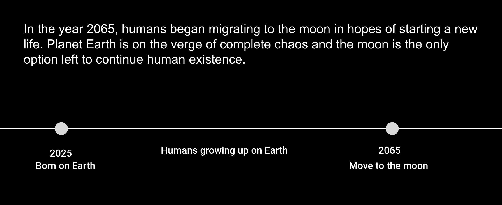
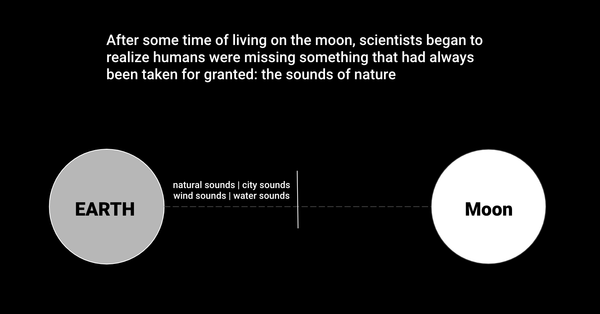
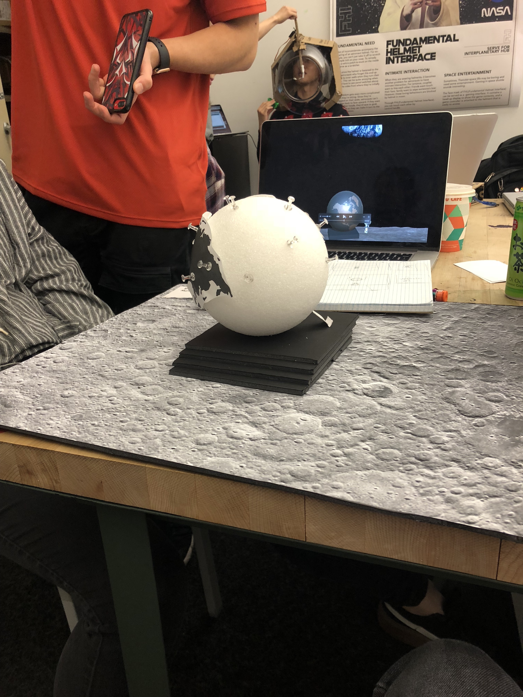

Object
SPRING SEMASTER 2019
Connecting the moon and earth
In the year 2065, humans began migrating to the moon in hopes of starting a new life. Planet Earth is on the verge of complete chaos and the moon is the only option left to continue human existence.
After some time of living on the moon, scientists began to realize humans were missing something that had always been taken for granted: the sounds of nature
Goals:
1. Reconnecting people with the natural sounds of earth that spark emotionally driven memories
2. Commemorate the beauty of earth and serve as a memorial and reminder to preserve our environment
3. Allow humans to hear while in the “outdoors”
2. Commemorate the beauty of earth and serve as a memorial and reminder to preserve our environment
3. Allow humans to hear while in the “outdoors”

Background


Prototype/ Iteration 1
